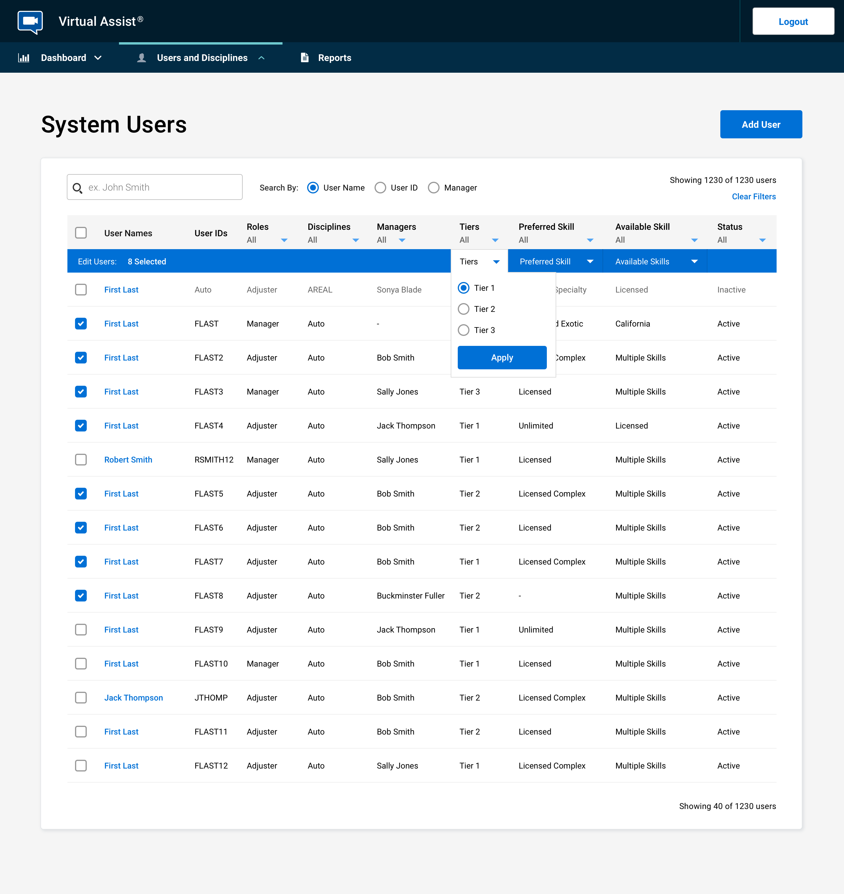

Allstate
Latest Design Work
Latest Design Work
Current product is called Collective, a platform to allow crowd workers to write damage reports in order to complete claims at a lower cost. One of my tasks as the product designer is redesigning the application using colors, fonts and branding provided from marketing. Going to advocate increasing the contrast a little bit but overall the layout is cleaner.

One of the improvements I've been making is to reduce the number of steps to complete the assessment users have to complete to become a member.
The job process interface uses the same clean and simple styles as the onboarding process.

Overall process flows and screens for registration and completing work process on Collective.

Virtual Assist is an app that allows users to video chat and share damage in order to get claims processed quickly. It consists of several applications: the native app (iOS and Android) for the end users, the desktop application used to employees to communicate with them, and then an administrative app to manage employees and route video calls based on type and resources available. The app had been live for two years before I started working on it so my work was more around making improvements.
One of the improvemets made to the admin app was to update the way skills were assigned to uses, and the ability to easilly add and remove multiple to a single user.

Another update to the admin app was adding the ability to multiselect and make batch changes to users. This helped the administrators shuffle employee resources around quickly and manage who would receive calls based on their tier, primary and secondary skills. New features and app improvements were surfaced by conducting user interviews and observations.
Below is a simple prototype I put together as an experiement with a Virtual Assist web application. We were testing to see if the performance of the web app would be on par with the native app, reducing the need for the user to have to visit the app store and download the application. An unneccessary step specially for users who will only use the application a single time.
The first product I worked on at Allstate is Photo Intake. A web app for phones and tablets that allows customers to submit damage photos in order to have their claims completed faster. Besides redesigning the original app and created several new versions for different uses, I spent time streamlining the process - removing unnecessary screens and taps, and proposing the creation of a deep link that could be sent to customers that could pass their data into the application, reducing steps to complete the process even further.

Photo Intake has several different flows depending on the type of damage (auto or property) and whether the process is guided, in which the user is asked for very specific photos or unguided, where they are able to upload photos of their choosing. I also created several alternative designs of the application for other brands.